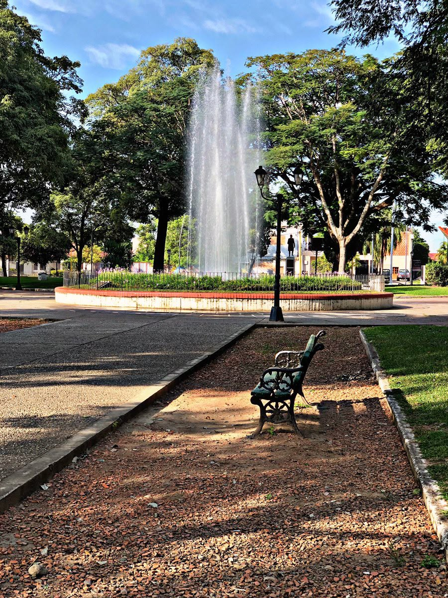
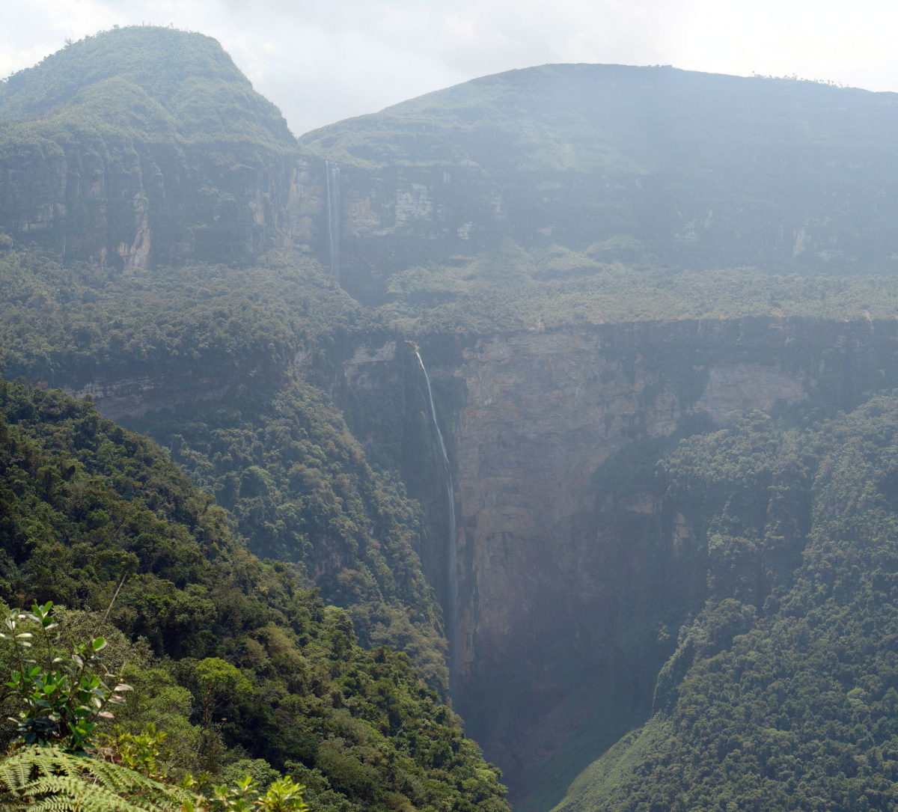
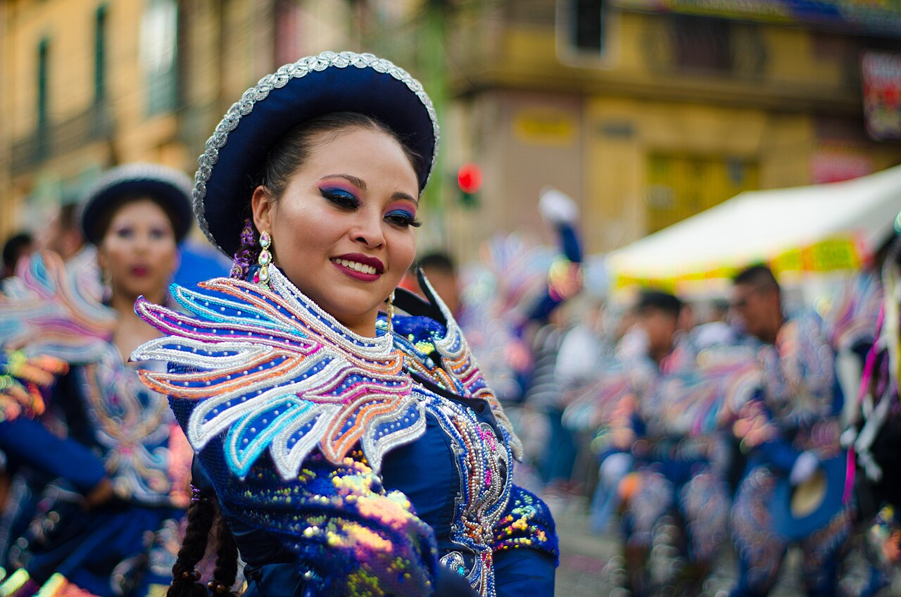

La tierra que se celebra
El 1° de agosto, la fiesta de la Pachamama rinde ofrendas a la tierra madre: la naturaleza es, también, objeto de devoción cultural.
Salta · Argentina · Norte argentino
Una ciudad con dos almas: la naturaleza exuberante de las Yungas y la cultura viva de su gente. Recorré las dos revistas.
Elegí tu recorrido ↓
San Ramón de la Nueva Orán se levanta en el extremo norte de Salta, muy cerca de la frontera con Bolivia, como cabecera del departamento Orán. La rodean las Yungas —una de las selvas de montaña más biodiversas de Argentina— y la atraviesan los ríos Blanco, Pescado y Bermejo.
Cada 31 de agosto la ciudad celebra su fundación junto a su santo patrono, San Ramón Nonato, en la fiesta más importante del año. Su identidad nació de la fusión de tradiciones indígenas, criollas, españolas y andinas, que aún hoy laten en sus fiestas, su música y su fe.
Naturaleza y cultura no se separan en Orán: la selva es el escenario donde vive su gente, y sus tradiciones celebran la tierra que la sostiene.
Dos ediciones complementarias sobre el mismo lugar: su patrimonio natural y sus raíces culturales. Entrá a la que quieras explorar.

Patrimonio natural
Revista Natural
Las Yungas, los ríos, la fauna y la flora de Orán. Territorio, biodiversidad, circuitos turísticos, conservación y juegos.
Explorar la naturaleza →
Patrimonio cultural
Revista Cultural
Fiestas patronales, carnaval, folclore, danzas, celebraciones religiosas y la identidad viva del pueblo oranense.
Explorar la cultura →En Orán, el ambiente y las costumbres se entrelazan. Tres ejemplos de ese vínculo.
El 1° de agosto, la fiesta de la Pachamama rinde ofrendas a la tierra madre: la naturaleza es, también, objeto de devoción cultural.
Los arrieros y pobladores rurales bajan por los caminos de las Yungas: la vida cotidiana y el folclore nacen del monte y sus ríos.
Procesiones, corsos y peregrinaciones ocurren en este marco natural único, donde el norte salteño une fe, identidad y territorio.
Extremo norte de Salta, a ~270 km de la capital, cerca de la frontera con Bolivia.
Se conmemora el 31 de agosto, junto al patrono San Ramón Nonato.
Las Yungas: selva de montaña, parte de la Reserva de Biósfera de las Yungas.
Fusión indígena, criolla, española y andina: fiestas, folclore y carnaval.